Gráfico de Área
Gráficos de área ajudam a visualizar a dinâmica de um conjunto de valores ao longo do tempo. Um gráfico de área é, essencialmente, um gráfico de linha, que passa por cima de uma região sombreada. Pode-se empilhar pequenos gráficos de linha uns sobre os outros de tal maneira que a área entre as linhas fica preenchida com cores. Isto permite que se veja a tendência geral dos dados, assim como a contribuição de cada grupo para o resultado total.
Este post ensina como fazer gráficos de área usando o ggplot2 no R. Primeiro, vamos ganhar intuição construindo um gráfico simples a partir de dados simluados. Depois, vamos revisar os principais elementos estéticos de um gráfico de área.
Visto o básico, partiremos para um caso aplicado, analisando as concessões de crédito direcionadas no Brasil. Neste exemplo, vamos usar o conhecimento de escalas e temas para aprimorar o gráfico de área. Por fim, vamos explorar uma base de projeções demográficas do Brasil usando gráficos de área.
ggplot2
Antes de mais nada, precisamos instalar e carregar alguns pacotes. Assim como em posts anteriores, além do pacote ggplot2 vamos utilizar alguns pacotes auxiliares para facilitar a manipulação dos dados.
#> Instala o pacote ggplot2 (se necessário)
install.packages(c("dplyr", "tidyr", "ggplot2", "RcppRoll", "GetBCBData"))
#> Carrega os pacotes
library("ggplot2")
#> Manipulação de dados
library("dplyr")
library("tidyr")
library("RcppRoll")
#> Importar dados da API do Banco Central do Brasil
library("GetBCBData")Exemplo simulado
Primeiro, vamos simular alguns dados para o nosso gráfico de área. No primeiro exemplo vamos montar uma base de dados (tibble) com os valores de uma série de vendas anuais de 2000 a 2005.
A coluna ano é uma variável contínua de 2000 a 2005. As colunas venda_a, venda_b e venda_c representam números hipotéticos de venda três lojas distintas (“1”, “2” e “3”).
tbl <- tibble(
ano = 2000:2005,
venda_1 = c(20, 24, 23, 27, 25, 26),
venda_2 = c(30, 22, 17, 23, 21, 18),
venda_3 = c(18, 19, 17, 17, 18, 19)
)A tabela tem a forma abaixo.
| ano | venda_1 | venda_2 | venda_3 |
|---|---|---|---|
| 2000 | 20 | 30 | 18 |
| 2001 | 24 | 22 | 19 |
| 2002 | 23 | 17 | 17 |
| 2003 | 27 | 23 | 17 |
| 2004 | 25 | 21 | 18 |
| 2005 | 26 | 18 | 19 |
Usamos a função geom_area() para criar um gráfico de área. Esta função recebe os argumentos x e y, que mapeiam as variáveis de dados no eixo x e no eixo y do gráfico, respectivamente.
O código abaixo monta um gráfico de área que mostra o número de vendas na loja 1.
ggplot(data = tbl) +
geom_area(aes(x = ano, y = venda_1))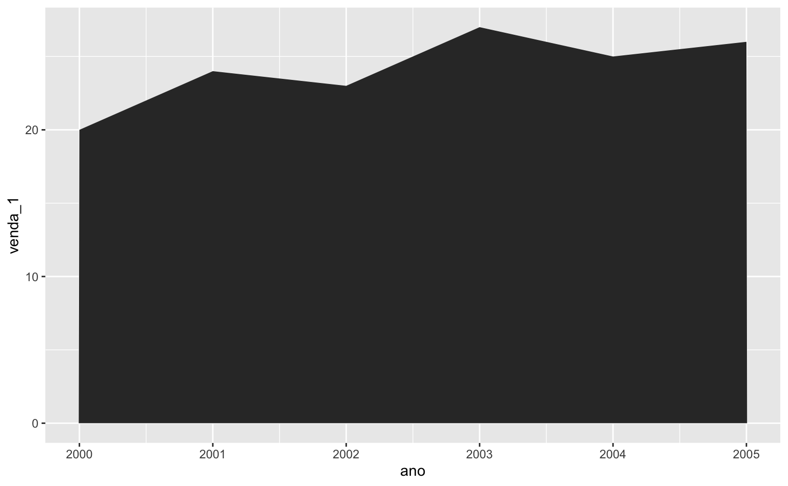
Para adicionar as vendas das outras lojas precisamos remodelar o formato dos nossos dados. Nossos dados estão em formato “wide”, no qual cada variável (vendas) é uma coluna distinta e cada observação é uma linha. O ggplot2 segue os princípios de tidy data e funciona melhor com dados em formato “long”, onde cada linha é uma observação única.
Convertemos os nossos dados para o formato “long” utilizando a função pivot_longer() da seguinte maneira:
long <- pivot_longer(
tbl,
venda_1:venda_3,
names_to = "loja",
values_to = "total"
)Agora cada linha representa o número de vendas em uma loja específica e num ano específico. Além disso, cada coluna é uma variável diferente: a coluna ano indica que o ano da observação, a coluna loja indica a loja e a coluna total indica o total de vendas.
| ano | loja | total |
|---|---|---|
| 2000 | venda_1 | 20 |
| 2000 | venda_2 | 30 |
| 2000 | venda_3 | 18 |
| 2001 | venda_1 | 24 |
| 2001 | venda_2 | 22 |
| 2001 | venda_3 | 19 |
| 2002 | venda_1 | 23 |
| 2002 | venda_2 | 17 |
| 2002 | venda_3 | 17 |
| 2003 | venda_1 | 27 |
| 2003 | venda_2 | 23 |
| 2003 | venda_3 | 17 |
| 2004 | venda_1 | 25 |
| 2004 | venda_2 | 21 |
| 2004 | venda_3 | 18 |
| 2005 | venda_1 | 26 |
| 2005 | venda_2 | 18 |
| 2005 | venda_3 | 19 |
Agora que temos nossos dados preparados, podemos montar nosso gráfico de área. Além dos argumentos x e y, também vamos especificar o argumento fill para indicar qual variável deve ser utilizada para preencher as cores entre as linhas.
ggplot(data = long) +
geom_area(aes(x = ano, y = total, fill = loja))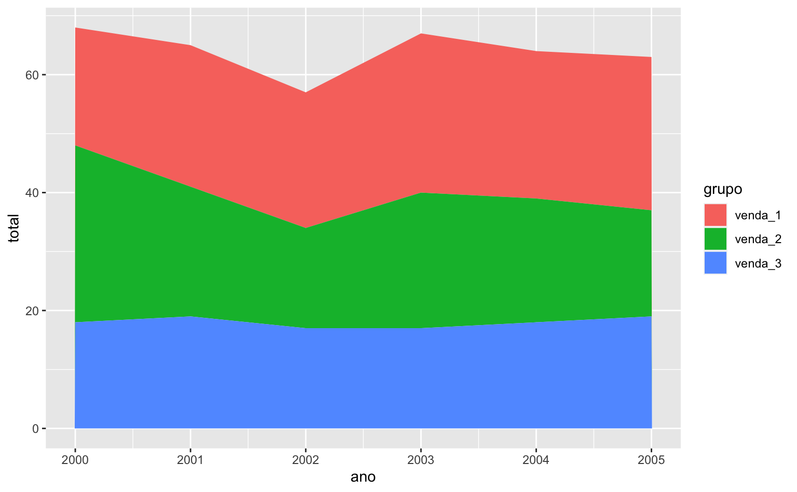
Factors
No gráfico acima, as áreas são empilhadas umas sobre as outras. Tipicamente, os grupos com os valores mais altos devem estar no topo da pilha e os grupos com valores mais baixos, na parte inferior. Na prática, a ordem é determinada pela ordem da variável fill. Neste caso, a ordem é dada pela variável categória loja1. Variáveis categóricas no R sempre devem ser do tipo factor. Já se apresentou factors anteriormente, mas vale a pena revisar esta importante classe.
Um factor é um tipo especial de string que possui um ordenamento (levels) que define a relação hierárquica entre os grupos. Imagine que você tem uma série de avaliações que podem ser “Bom”, “Médio” ou “Ruim” armazenadas num vetor chamado feedback. Para estruturar esta variável como factor é preciso definir qual a ordem destes valores. No exemplo abaixo define-se uma relação crescente: de “Ruim” até “Bom”.
feedback <- c("Bom", "Bom", "Médio", "Ruim", "Médio", "Médio")
satisfacao <- factor(feedback, levels = c("Ruim", "Médio", "Bom"))No caso do gráfico acima, como não definimos a ordem da variável categórica, o ggplot2 tenta adivinha-la. De maneira geral, o ggplot respeita a ordem alfabética e a ordem de grandeza numérica. Por isso, no gráfico acima a ordem foi venda_1, venda_2 e venda_3.
Para definir a ordem dos lojass é preciso criar uma variável do tipo factor e especificar o argumento levels. O exemplo abaixo define uma nova ordem para os grupos o que resulta num gráfico diferente.
long_reordenado <- long |>
mutate(
loja = factor(loja, levels = c("venda_3", "venda_1", "venda_2"))
)
ggplot(data = long_reordenado) +
geom_area(aes(x = ano, y = total, fill = loja))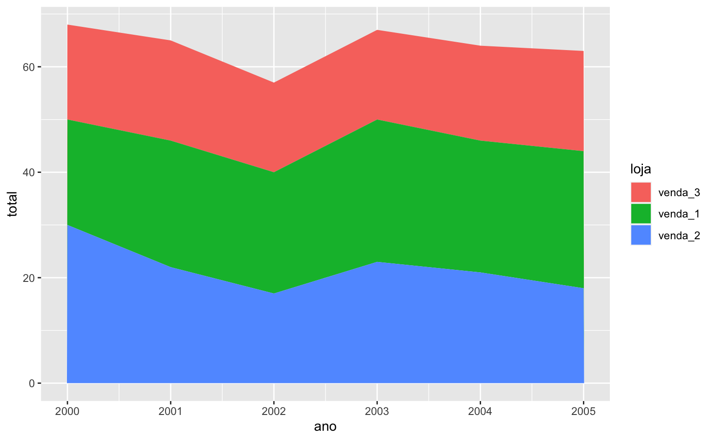
Elementos estéticos
Os principais elementos estéticos da função geom_area() são
fill- A cor que preenche a área abaixo da linha.color- A cor da linha.alpha- O nível de transparência das cores.linetype- O tipo de linha (tracejado).linewidth- A espessura da linha.
Os elementos estéticos podem receber dois tipos de valores: constantes ou variáveis. Uma constante é simplesmente um valor (número, texto, etc.) enquanto uma variável é o nome de alguma coluna da base de dados. Mapear variáveis em elementos estéticos permite fazer um gráfico de área em que cada cor representa um grupo distinto, como se viu no exemplo anterior.
O gráfico abaixo mostra o volume de inventário de casas à venda em três cidades no Texas, usando a base txhousing. Note que o elemento fill é variável e definido como fill = city dentro da função aes(). Quando se mapeia uma coluna/variável para um elemento estético sempre se usa a função aes() da mesma maneira como se faz para mapear as variáveis x e y. Como a variável city é mapeada usa-se scale_fill_manual() para definir as suas cores e para controlar a legenda.
sub <- txhousing |>
filter(
city %in% c("Austin", "Houston", "Dallas"),
year >= 2010
)
ggplot(data = sub) +
geom_area(aes(x = date, y = inventory, fill = city)) +
#> Define as cores e controla a legenda
scale_fill_manual(
#> Título da legenda
name = "Cidades",
#> Cores
values = c("#0a9396", "#ee9b00", "#ae2012"))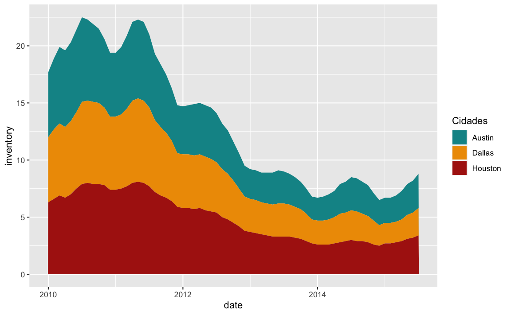
Para seguir os exemplos abaixo será útil definir este gráfico como um template padrão. Vamos chamá-lo de base_plot.
base_plot <- ggplot(sub, aes(x = date, y = inventory, fill = city)) +
#> Define as cores e controla a legenda
scale_fill_manual(
#> Título da legenda
name = "Cidades",
#> Cores
values = c("#0a9396", "#ee9b00", "#ae2012")
) +
guides(fill = "none")alpha
O argumento alpha controla o nível de transparência do objeto, isto é, da linha e da área abaixo da linha. O valor escolhido deve variar entre 0 e 1, onde 0 indica transparência máxima. Também é possível mapear uma coluna usando alpha, de maneira que cada grupo será representado por um nível de transparência distinto, mas há pouca utilidade prática nisto. O painel de gráficos abaixo mostra alguns valores de alpha.
base_plot + geom_area(alpha = 0.2)
base_plot + geom_area(alpha = 0.4)
base_plot + geom_area(alpha = 0.6)
base_plot + geom_area(alpha = 0.8)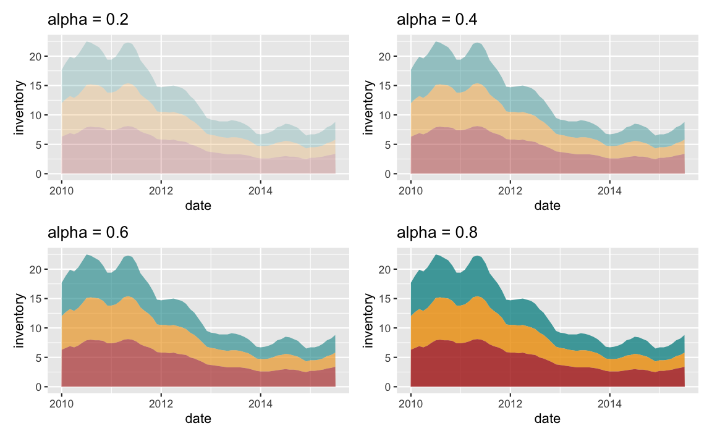
fill e color
O padrão da função geom_area é de sempre manter os argumentos fill e color iguais. Isto garante uma visualização simples e fluída. Contudo, é possível definir especificamente uma cor para cada elemento. O argumento color define a cor da linha no topo da área, enquanto fill define a cor que preenche a área. Para mostrar isto, usa-se novamente o exemplo com dados simulados.
Note que para tornar a cor da linha mais aparente uso linewidth = 3. Isto torna a linha mais espessa.
#> Linha e área tem a mesma cor
ggplot(tbl, aes(x = ano, y = venda_1)) +
geom_area(fill = "#0a9396")
#> Linha amarela e área verde
ggplot(tbl, aes(x = ano, y = venda_1)) +
geom_area(fill = "#0a9396", color = "#ee9b00", linewidth = 3)
#> Linha e área tem a mesma cor
ggplot(long, aes(x = ano, y = total, fill = loja)) +
geom_area()
#> Linha amarela e área variando por grupo
ggplot(long, aes(x = ano, y = total, fill = loja)) +
geom_area(color = "#ee9b00", linewidth = 3)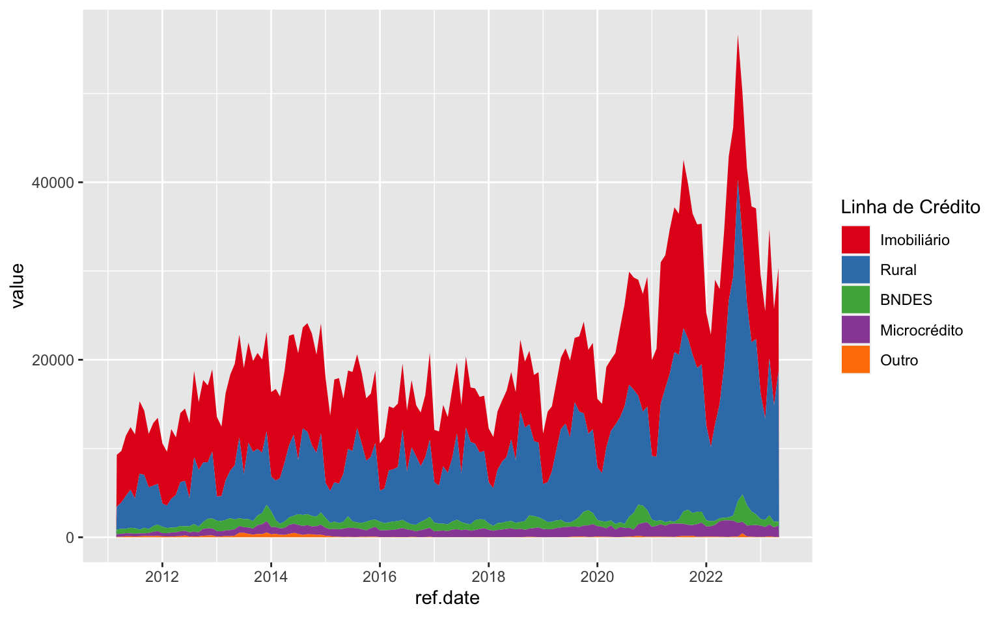
linetype e linewidth
Estes argumentos se comportam da mesma maneira como no caso de gráficos de linha, com a função geom_line. O argumento linetype controla o tipo da linha (e.g. sólida, tracejada, etc.) enquanto linewidth controla a espessura da linha. Note que os argumento serão aplicados apenas se houver uma diferença entre color e fill.
O exemplo abaixo mostra como mudar o tipo da linha que fica sobre a área colorida. Para ver os demais tipos de linha consulte o post inicial sobre gráficos de linha.
base_plot + geom_area(linetype = 5)
base_plot + geom_area(color = "white", linetype = 1)
base_plot + geom_area(color = "white", linetype = 5)
base_plot + geom_area(color = "white", linetype = 6)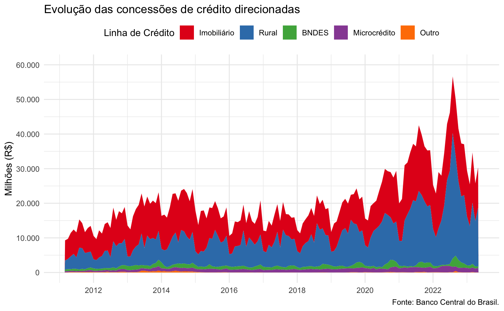
O painel de gráficos abaixo mostra como variar a espessura da linha. Novamente, este argumento será aplicado apenas se o argumento color for diferente do argumento fill.
base_plot + geom_area(color = "white", linewidth = 0.5)
base_plot + geom_area(color = "white", linewidth = 1)
base_plot + geom_area(color = "white", linewidth = 2)
base_plot + geom_area(color = "white", linewidth = 5) 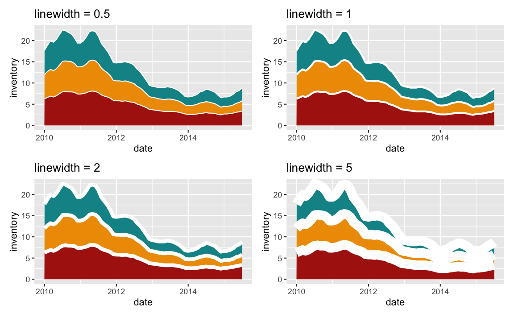
Crédito Direcionado
Agora vamos seguir para um exemplo aplicado. Vamos explorar o volume de crédito direcionado para pessoas físicas no Brasil. Para importar os dados vamos usar o pacote GetBCBData que interage com a API do Banco Central do Brasil e que traz os dados já no formato “long” dentro do R.
O código abaixo importa as séries de tempo e identifica elas. A manipulação de dados é feita usando funções do pacote dplyr. Cria-se uma coluna chamada linha_credito que identifica o nome da linha de crédito a partir do ID da série.
#> Códigos numéricos das séries de crédito direcionado para Pessoas Físicas
codigos <- c(20701, 20704, 20708, 20712, 20713)
#> Importa as séries a partir de 01/mar/2011
series <- gbcbd_get_series(codigos, first.date = as.Date("01-03-2011"))
#> Cria uma coluna chamada linha_credito indicando qual a linha de crédito
series <- series |>
mutate(
linha_credito = case_when(
id.num == 20701 ~ "Rural",
id.num == 20704 ~ "Imobiliário",
id.num == 20708 ~ "BNDES",
id.num == 20712 ~ "Microcrédito",
id.num == 20713 ~ "Outro"
)
)Vamos montar um gráfico de área simples que mostra a composição e a evolução do crédito direcionado.
#> Plota o gráfico
ggplot(data = series) +
geom_area(aes(x = ref.date, y = value, fill = linha_credito))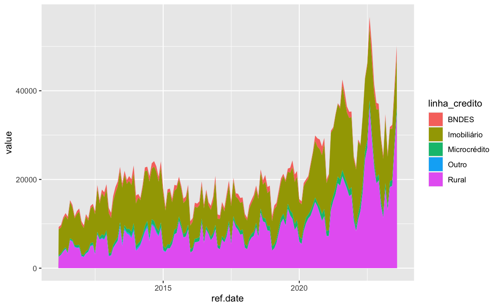
Este gráfico pode ser melhorado de diversas formas. Vamos explorar algumas opções.
Reordenando os grupos
Pelo gráfico, vemos que o crédito rural e o crédito imobiliário são as linhas de crédito mais expressivas. O código abaixo reordena o nível dos grupos para dar mais destaque ao crédito imobiliário e ao crédito rural.
series <- series |>
mutate(
linha_credito = factor(
linha_credito,
levels = c("Imobiliário", "Rural", "BNDES", "Microcrédito", "Outro"))
)
ggplot(data = series) +
geom_area(aes(x = ref.date, y = value, fill = linha_credito))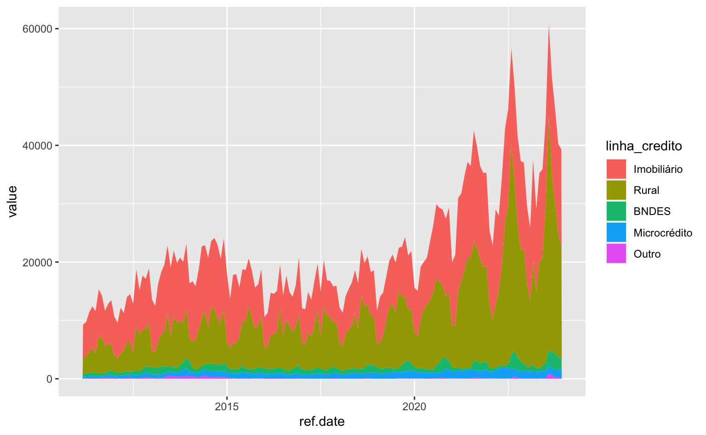
Trocando as cores
A escolha automática de cores do ggplot raramente é satisfatória. Podemos escolher novas cores manualmente usando a função scale_fill_manual(). Além disso, também adicionamos um título mais apropriado para a legenda das cores.
ggplot(data = series) +
geom_area(aes(x = ref.date, y = value, fill = linha_credito)) +
#> Define a cor dos grupos e adiciona um título na legenda
scale_fill_manual(
name = "Linha de Crédito",
values = c("#005f73", "#94d2bd", "#ee9b00", "#bb3e03", "#9b2226")
)Uma solução mais prática é utilizar uma paleta pré-definida de cores. A função scale_fill_brewer(), por exemplo, possui várias paletas importadas do Color Brewer.
ggplot(data = series) +
geom_area(aes(x = ref.date, y = value, fill = linha_credito)) +
#> Define a cor dos grupos e adiciona um título na legenda
scale_fill_brewer(
name = "Linha de Crédito",
type = "qual",
palette = 6
)Ajustando eixos
Para ajustar os eixos utilizamos as funções scale_. Primeiro, vamos ajustar o eixo-x usando scale_x_date. Nesta função, date_breaks indica a frequências das quebras e date_labels indica o formato da data a ser impresso no eixo. No caso abaixo temos quebras anuais onde apenas o número (extenso) do ano é plotado.
ggplot(data = series) +
geom_area(aes(x = ref.date, y = value, fill = linha_credito)) +
scale_fill_brewer(name = "Linha de Crédito", type = "qual", palette = 6) +
scale_x_date(date_breaks = "1 year", date_labels = "%Y")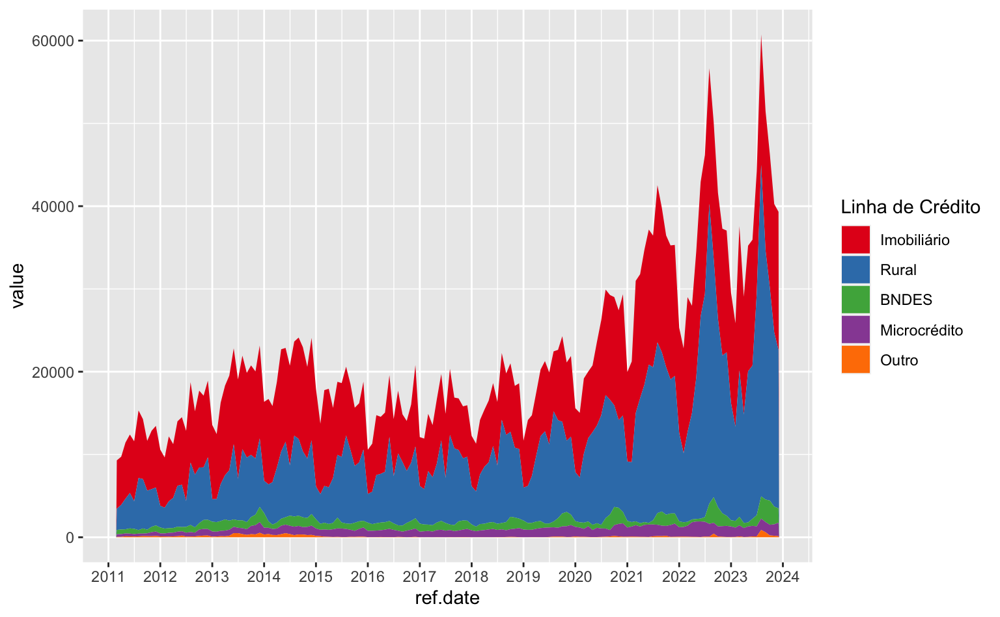
Note que há duas pequenas áreas entre o gráfico e os limites do painel. Pode-se suprimir esta área usando expand = c(0, 0) dentro da função scale_.
ggplot(data = series) +
geom_area(aes(x = ref.date, y = value, fill = linha_credito)) +
scale_fill_brewer(name = "Linha de Crédito", type = "qual", palette = 6) +
scale_x_date(date_breaks = "1 year", date_labels = "%Y", expand = c(0, 0))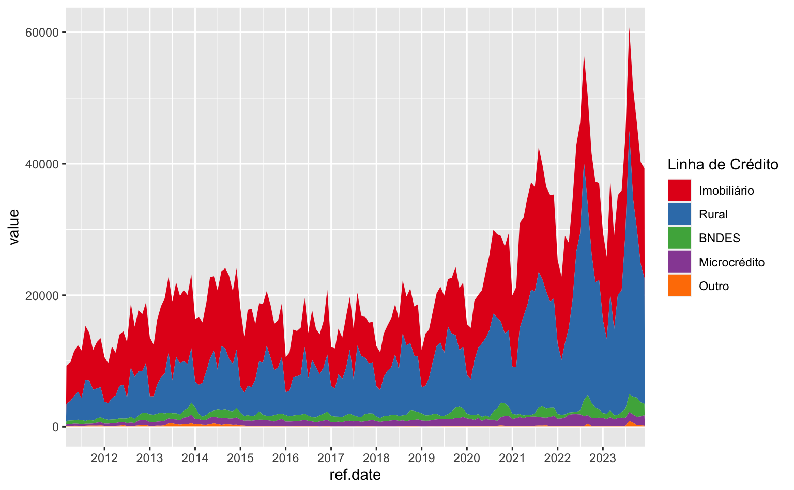
No código abaixo a função scale_y_continuous() altera o eixo-y de três formas: primeiro, o argumento breaks define os números que devem ser destacados no eixo; segundo, o argumento labels modifica a aparência destes números no gráfico; por fim, limits estabelece os limites inferior e superior do eixo-y.
A função scales::label_number(big.mark = ".") pode parecer um pouco confusa, mas ela simplesmente informa que o sinal de ponto “.” deve ser utilizado como separador de milhar. Assim 10000 é convertido para 10.0002.
ggplot(data = series) +
geom_area(aes(x = ref.date, y = value, fill = linha_credito)) +
scale_fill_brewer(name = "Linha de Crédito", type = "qual", palette = 6) +
scale_x_date(date_breaks = "1 year", date_labels = "%Y", expand = c(0, 0)) +
#> Modifica o comportamento do eixo-y
scale_y_continuous(
breaks = seq(0, 60000, 10000),
labels = scales::label_number(big.mark = "."),
limits = c(0, 60000)
)Títulos e elementos temáticos
Para adicionar títulos o modificar o nome de cada eixo utilizamos a função labs(). Para este gráfico escolhemos um tema neutro com fundo branco theme_minimal(). Além disso, adiciono alguns argumentos na função theme para customizar o gráfico. Para mais detalhes consulte o post sobre elementos temáticos.
ggplot(data = series) +
geom_area(aes(x = ref.date, y = value, fill = linha_credito)) +
geom_hline(yintercept = 0) +
scale_fill_brewer(name = "Linha de Crédito", type = "qual", palette = 6) +
scale_x_date(date_breaks = "1 year", date_labels = "%Y", expand = c(0, 0)) +
scale_y_continuous(
breaks = seq(0, 60000, 10000),
labels = scales::label_number(big.mark = "."),
limits = c(0, 60000)) +
#> Define o título e o nome dos eixos
labs(
title = "Evolução das concessões de crédito direcionadas",
caption = "Fonte: Banco Central do Brasil.",
#> Omite o nome do eixo-x
x = NULL,
y = "Milhões (R$)"
) +
#> Insere um tema minimalista com fundo branco
theme_minimal(base_family = "Helvetica") +
theme(
legend.position = "top",
axis.text.x = element_text(angle = 90),
panel.grid.minor = element_blank(),
panel.grid.major.x = element_blank()
)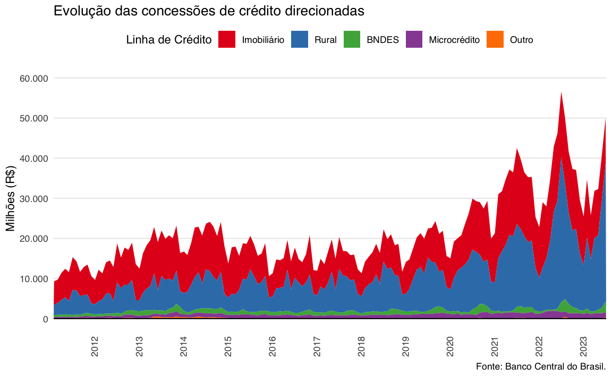
Suavizando a série
Por fim, pode-se suavizar a série para reduzir o impacto da sazonalidade na visualização. Isto não é uma decisão puramente estética, pois modifica os dados e troca a ênfase do gráfico: enxerga-se, agora, a tendência dos dados.
Há muitas maneiras de se fazer isto. Pode-se, por exemplo, dessazonalizar os dados usando X-13 ARIMA; pode-se extrair a tendência das séries utilizando algum filtro linear como de médias móveis, Holt-Winters, filtro HP, etc.
Uma alternativa bastante simples é somar as últimas doze observações e criar uma janela móvel. Assim temos as concessões acumuladas nos últimos doze meses. Para calcular esta soma utilizamos a função RcppRoll::roll_sumr(). Como a magnitude dos valores aumenta, dividimos o valor final por mil (agora os valores estão em bilhões de reais).
series <- series |>
group_by(linha_credito) |>
mutate(soma_12 = RcppRoll::roll_sumr(value, n = 12) / 1000) |>
ungroup()
ggplot(data = series) +
geom_area(aes(x = ref.date, y = soma_12, fill = linha_credito)) +
geom_hline(yintercept = 0) +
scale_x_date(date_breaks = "1 year", date_labels = "%Y", expand = c(0, 0)) +
scale_fill_brewer(
name = "Linha de Crédito",
type = "qual",
palette = 6) +
labs(
title = "Evolução das concessões de crédito direcionadas",
subtitle = "Concessões de crédito mensais (soma dos últimos 12 meses).",
caption = "Fonte: Banco Central do Brasil.",
x = NULL,
y = "R$ (bilhões)") +
theme_minimal() +
theme(
legend.position = "top"
)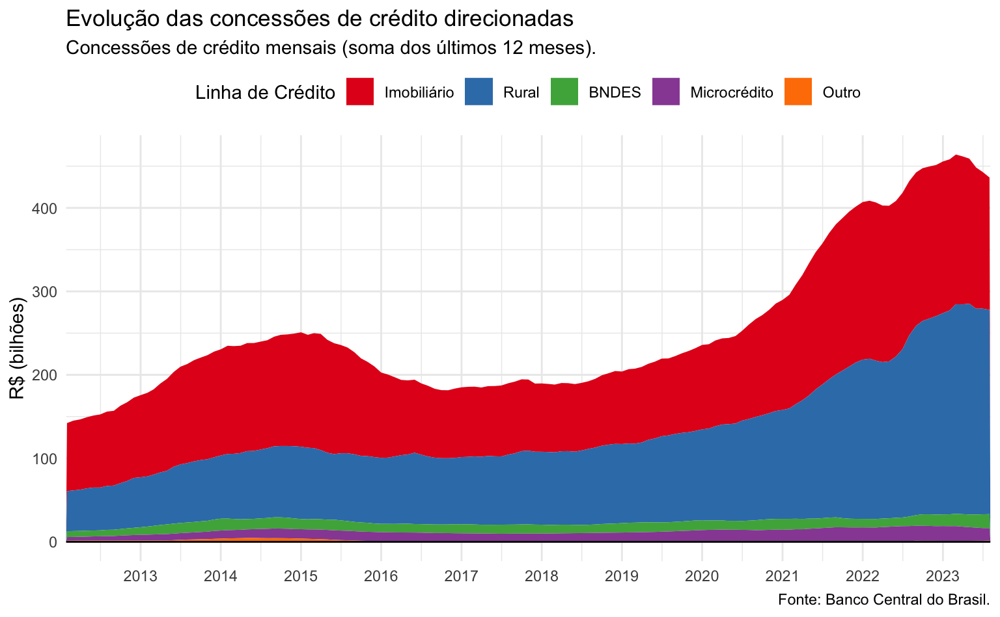
Resumo
Em suma, há duas decisões importantes a se fazer com gráficos de área:
- Reordenar a ordem dos grupos. A variável que define os grupos deve sempre ser um
factore sua ordem deve ser significativa. Em geral, apresentar os grupos em ordem decrescente pode ser a melhor opção, mas há exceções. - Suavizar as séries de dados. Oscilações sazonais ou quebras de nível drásticas não são muito bonitas em gráficos de área. Nestes casos, pode ser interessante suavizar a série ou considerar outro tipo de gráfico, como um gráfico de linha convencional.
As demais melhorias apresentadas, como ajustar eixos e cores, são majoritariamente estéticas, mas devem ser feitas em qualquer tipo de gráfico. As cores, eixos e tema padrões do ggplot2 não são adequadas para uma visualização bem trabalhada.
Demografia
Vamos explorar algumas tendências demográficas do Brasil. Os dados são do projeto de projeções populacionais da ONU (World Population Prospects) e estão disponíves em formato csv e xlsx no site. Esta base de dados, em particular, inclui tanto valores passados como projeções futuras para a população mundial, por países.
A tabela que vamos usar contém as estimativas passadas e projeções futuras da população em grupos de cinco anos (0-4, 5-9, 10-14, …, 100+) por sexo. Para ler os dados usamos a função read_csv(). Vamos considerar somente a janela entre 2000 e 2050 e a variável pop_total que estimativa da população total num determinado ano. Para facilitar a leitura, os dados são agregados em grupos maiores: crianças (0-14), adolescentes (15-24), adultos (25-64) e idosos (65+).
O código abaixo faz a manipulação de dados necessária para montar os gráficos3.
#> Importa a base de dados
wpp <- read_csv(
"https://github.com/viniciusoike/restateinsight/raw/main/posts/ggplot2-tutorial/wpp_brazil.csv"
)
#> Seleciona apenas dados sobre o Brasil entre os anos de 2000 e 2050.
brazil <- wpp |>
filter(
location == "Brazil",
year >= 2000,
year <= 2050
)
#> Soma o total da população a cada ano
pop <- brazil |>
group_by(year) |>
summarise(population = sum(pop_total)) |>
ungroup()
#> Soma o total da população por grupos de idade a cada ano
pop_group <- brazil |>
group_by(year, age_group) |>
summarise(population = sum(pop_total)) |>
ungroup()
#> Seleciona somente o grupo de adultos
pop_adult <- filter(brazil, age_group == "25-64")Além disso, vamos definir um tema padrão para nossos gráficos.
#> Define um tema padrão
theme_area <- theme_minimal(base_family = "Helvetica") +
theme(
legend.position = "top",
panel.grid.minor = element_blank(),
panel.grid.major.x = element_blank()
)A tabela pop apresenta a população total projetada para cada ano e tem o formato abaixo. Os dados de população estão em milhares.
head(pop)| year | population |
|---|---|
| 2000 | 174693 |
| 2001 | 177055 |
| 2002 | 179369 |
| 2003 | 181584 |
| 2004 | 183674 |
| 2005 | 185770 |
Vamos combinar a função geom_area() com outras duas: uma para fazer pontos e outra para traçar uma linha horizontal no zero do eixo-y. Para desenhar os pontos vamos utilizar a função geom_point() e para traçar a linha horizontal, geom_hline(). Para manter um padrão de cores vamos escolher uma constante #2a9d8f (um tom de verde-azulado).
O código abaixo gera uma espécie de gráfico de linha, com pontos, com uma região sombreada. Note que os elementos estéticos fill e color são constantes.
col = "#2a9d8f"
ggplot(data = pop, aes(x = year, y = population)) +
geom_area(alpha = 0.5, fill = col) +
#> Linha horizontal no 0
geom_hline(yintercept = 0) +
#> Pontos para destacar as observações
geom_point(color = col) +
theme_area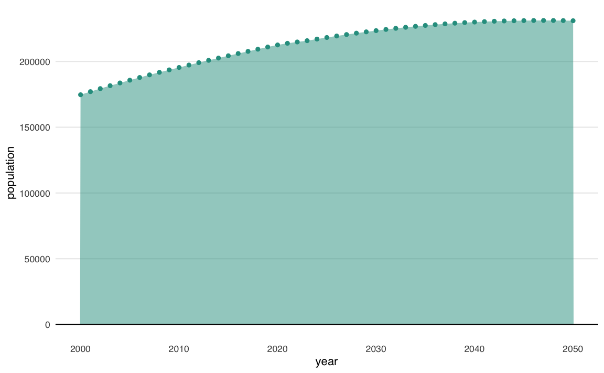
Podemos combinar o gráfico acima com a função facet_wrap() para montar quatro gráficos, mostrando a evolução da população dentro de cada um dos grupos4.
O grupo de crianças (0 a 14 anos) cai, enquanto o grupo de idosos (65+) aumenta expressivamente. O grupo de adultos (25-64) aumenta até atingir um máximo ao redor de 2040 e depois passa a cair suavemente. Por fim, o grupo de adolescentes/jovens (15-24) cai suavamente.
ggplot(data = pop_group, aes(x = year, y = population)) +
geom_area(alpha = 0.5, fill = col) +
geom_hline(yintercept = 0) +
geom_point(color = col) +
facet_wrap(vars(age_group)) +
theme_area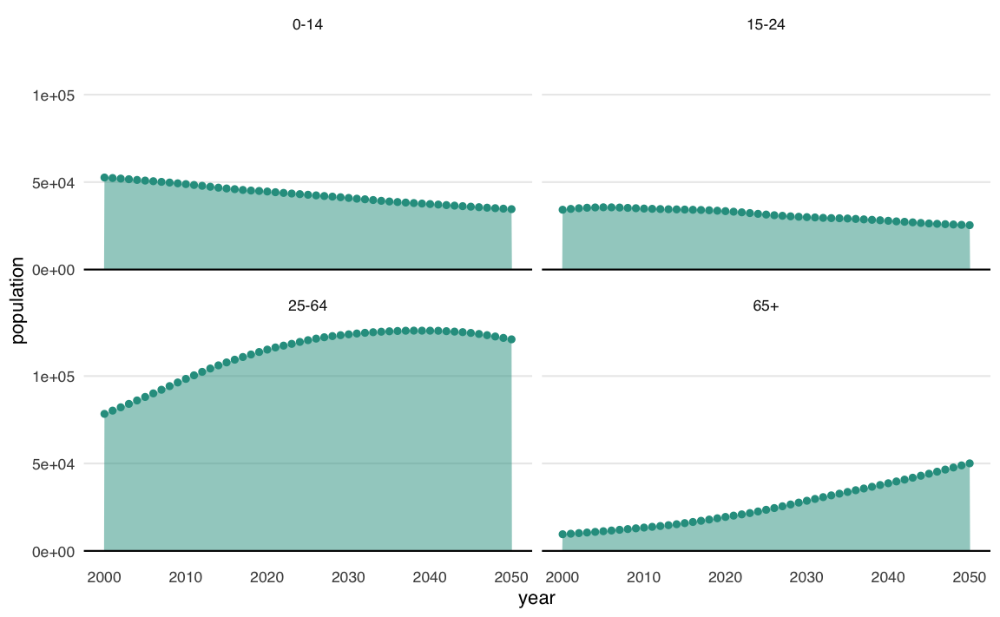
Assim como nos exemplos anteriores, podemos também empilhar os grupos e ter uma noção da representatividade de cada um deles no total da população. Neste gráfico, vê-se como a população total cresce cada vez mais devagar até quase estabilizar por volta de 2045. A composição da população se altera, além de crescer, com maior participação de idosos e menor participação de crianças na população.
ggplot(data = pop_group) +
geom_area(aes(x = year, y = population, fill = age_group)) +
geom_hline(yintercept = 0) +
scale_fill_brewer(name = "", type = "qual", palette = 6) +
theme_area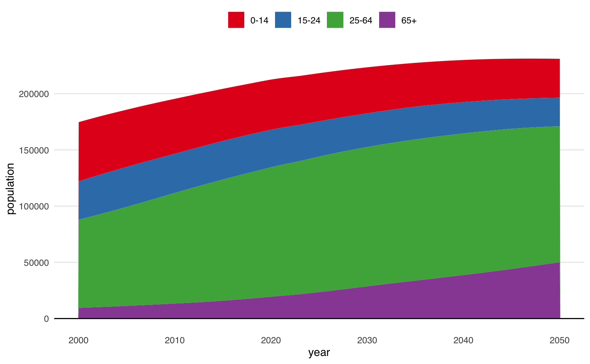
Pode-se acrescentar elementos textuais no gráfico acima5. Similarmente como se faz com gráficos de coluna, basta usar position_stack(vjust = 0.5) dentro de geom_text ou geom_label. Para evitar que os valores de todos os anos sejam plotados, crio uma variável auxiliar, label, que contém valores ausentes exceto em 2000 e em 2050. Além disso, para melhorar a visualização, faço um pequeno deslocamento na variável year para desclocar a posição horizontal do label6.
Neste gráfico, fica evidente a mudança na composição entre cada grupo da população. Enquanto a população de crianças e adolescentes diminui, a população de idosos mais do que quintuplica no período de 50 anos, subindo de 9,5 milhão para pouco mais de 50 milhão. Os adultos continuam sendo o grupo mais expressivo da população, chegando a 121 milhão em 2050.
pop_group <- pop_group |>
mutate(
label = ifelse(!year %in% c(2000, 2050), NA, round(population / 1000, 1)),
x_pos = case_when(
year == 2000 ~ year + 2,
year == 2050 ~ year - 2,
TRUE ~ NA
)
)
ggplot(pop_group, aes(year, population, fill = age_group, group = age_group)) +
geom_area() +
geom_hline(yintercept = 0) +
#> Acrescenta os valores textuais no gráfico
geom_label(
aes(x = x_pos, y = population, label = label),
#> Define a cor do fundo do 'label'
fill = "white",
#> Alinhamento vertical
position = position_stack(vjust = 0.5)
) +
scale_fill_brewer(name = "", type = "qual", palette = 6) +
theme_area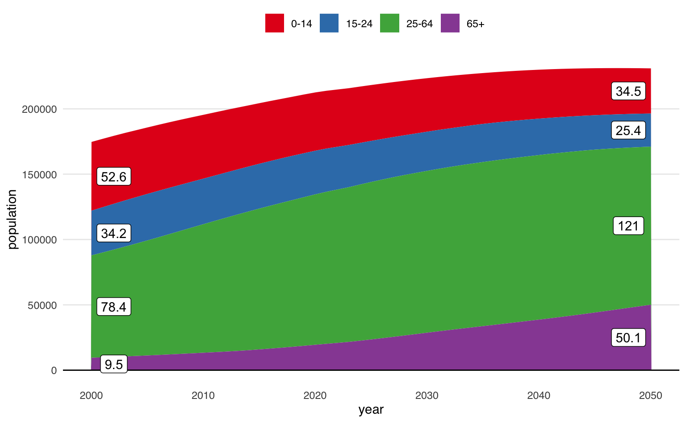
Gráficos de área não costumam funcionar bem quando há muito grupos e, sobretudo , quando há pouca variação entre eles. O exemplo abaixo mostra a dinâmica da população adulta (25-64), em grupos de idade de cinco anos. Com o olhar atento, pode-se perceber que os grupos acima de 50 anos (50-54, 55-59 e 60-64) crescem em número absoluto e ganham participação. Ainda assim, é difícil distinguir diferenças entre os demais grupos.
ggplot(pop_adult, aes(x = year, y = pop_total / 1000, fill = age_subgroup)) +
geom_area(color = "gray80", linewidth = 0.5) +
scale_fill_viridis_d(name = "") +
geom_hline(yintercept = 0) +
theme_area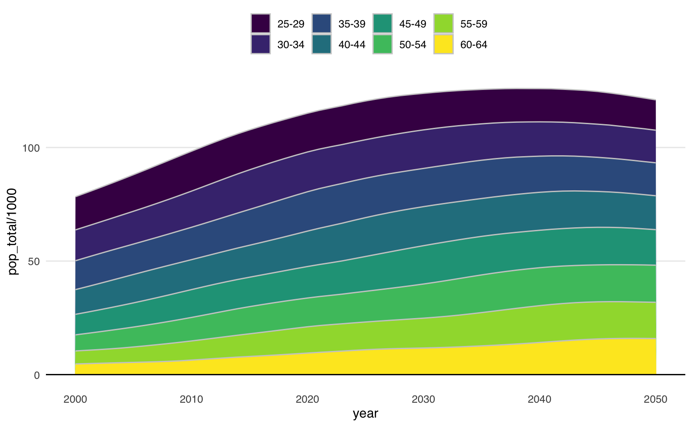
Resumindo
Um dos principais benefícios de usar gráficos de área é que eles permitem visualizar facilmente a tendência geral dos dados e a contribuição de cada grupo individual para o total. No geral, gráficos de área são uma ferramenta útil para visualizar a magnitude da mudança ao longo do tempo e comparar diferentes categorias ou grupos de dados uns com os outros. Estes gráficos também podem ser um substituto interessante para gráficos de linha convencionais.
Abaixo seguem algumas recomendações finais na hora de fazer gráficos de área.
- Não utilize um gráfico de área para representar mais do que 5 ou 6 grupos.
- Escolha manualmente a ordem dos grupos para facilitar a visualização do gráfico.
- Coloque a legenda de cores acima ou abaixo do gráfico para poupar espaço.
- Use texto para destacar informações importantes.
- Para facilitar a visualização, considere suavizar a série. Lembre-se de indicar que houve uma transformação nos dados.
Outros posts citados
Footnotes
Para uma breve revisão sobre variáveis categóricas ou discretas, consulte o post.↩︎
Na prática ela faz o mesmo que a função base `format()`.↩︎
Para uma revisão sobre manipulação de dados consulte o post da série sobre o asssunto.↩︎
Para mais detalhes sobre a função
facet_wrapconsulte o post da série sobre o assunto.↩︎Para mais detalhes sobre como destacar informação com texto consulte o post da série sobre o assunto.↩︎
Vale notar que o mesmo ajuste poderia ter sido realizado com
nudge_xdentro degeom_label.↩︎